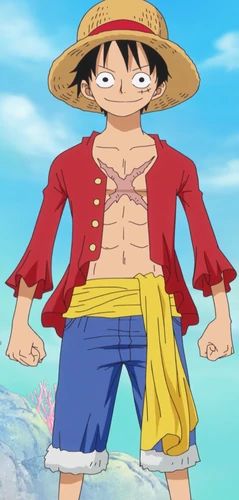

Monkey D. Luffy
Straw Hat
Monkey D. Luffy, also known as "Straw Hat
Luffy" and commonly as "Straw Hat", is the
main protagonist of the manga and anime,
One Piece.
Monkey D. Luffy, also known as "Straw Hat
Luffy" and commonly as "Straw Hat", is the
main protagonist of the manga and anime,
One Piece.